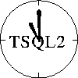

|
| TSQL2 |
| Fast I/O | |
| Granularity | |
| Indeterminacy | |
| MultiCal | |
| Now | |
| TADT | |
| Timestamps | |
| TSQL2 | |
| Curtis Dyreson | |
| Home | |
| Publications | |
| Projects | |
| Software | |
| Demos | |
| Teaching | |
| Contact me | |

TSQL2 is a consensus temporal query language developed by a committee of leading temporal database researchers. TSQL2 is an extension of SQL-92, and now a book:
Snodgrass, R.T., editor, The TSQL2 Temporal Query Language,For more on TSQL2 travel the web to the University of Arizona.
Kluwer Academic Publishers, 1995, 674+xxiv pages.
ftp to the TSQL2 directory at the University of ArizonaHere is what the README file at Arizona says (as of 1995, it may have changed!).
This directory contains the language specification for a temporal extension to the SQL-92 language standard. This new language is designated TSQL2.
The language specification present here is the final version of the language.
Correspondence may be directed to the chair of the TSQL2 Language Design Committee, Richard T.Snodgrass, Department of Computer Science, University of Arizona, Tucson, AZ 85721, <rts@cs.arizona.edu>. The affiliations and e-mail addresses of the TSQL2 Language Design Committee members may be found in a separate section at the end of the language specification.
The contents of this directory are as follows.
spec.dvi,.ps TSQL2 Language Specification
Associated with the language specification is a collection of commentaries which discuss design decisions, provide examples, and consider how the language may be implemented. These commentaries were originally proposals to the TSQL2 Language Design Committee. They now serve a different purpose: to provide examples of the constructs, motivate the many decisions made during the language design, and compare TSQL2 with the many other language proposals that have been made over the last fifteen years. It should be emphasized that these commentaries are not part of the TSQL2 language specification per se, but rather supplement and elaborate upon it. The language specification proper is the final word on TSQL2.
The commentaries, along with the language specification, several indexes, and other supporting material, has been published as a book, to appear in September, 1995:
Snodgrass, R.T., editor, The TSQL2 Temporal Query Language, Kluwer Academic Publishers, 1995, 674+xxiv pages.
The evaluation commentary appears in the book in an abbreviated form; the full commentary is provided in this directory as file eval.ps
The file tl2tsql2.pl is a prolog program that tranlates allowed temporal logic to TSQL2. This program was written by Michael Boehlen <boehlen@cs.arizona.edu> He may be contacted for a paper that describes this translation.
Curtis E. Dyreson © 1993-2001. All rights reserved.